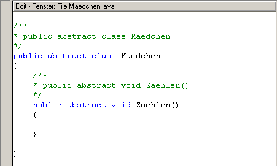

Das Edit-Fenster |
|
 Das Edit-Fenster befindet sich beim Starten von Jumli auf der rechten Seite, unterhalb des Modell-Fensters. Zu Anfang ist es grau unterlegt, was bedeutet, dass es im Moment nicht aktiv ist. Wird eine Klasse generiert, so wird der Hintergrund weiß. Jetzt kann im Edit-Fenster gearbeitet werden, der Sourcecode wird angezeigt. Haben Sie direkt im Edit-Fenster ein neues Attribut oder eine Methode hinzugefügt, so kann über Code->File analysieren das Modell-Fenster auf den aktuellen Stand gesetzt werden. Jetzt steht auch im UML-Modell das neue Attribut bzw. die neue Methode. Dies funktioniert aber nur beim Hinzufügen von Attributen oder Methoden im Edit-View und nicht beim Entfernen. Haben sie ein SDK installiert (hier), können Sie durch markieren eines Wortes im Edit-View mit Hilfe der F1-Taste in die Dokumentation gelangen. War die Suche speziell nach dem Wort ergebnislos, wird die SDK-Übersicht gestartet. Verschiedene FarbenIm Edit-Fenster gibt es verschiedenartige Textfarben, das sogenannte Highlighting. Durch diese wird das Einlesen in ein unbekanntes Programm erleichtert. Es besteht die Möglichkeit über Optionen->Jumli Optionen diese Standardfarben je nach Wunsch zu ändern.
|
|
Zurück zur Fenster Übersicht |
|
Zurück zur Startseite |
|